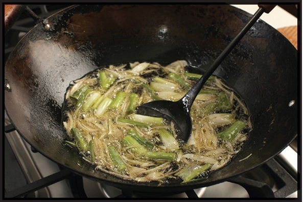
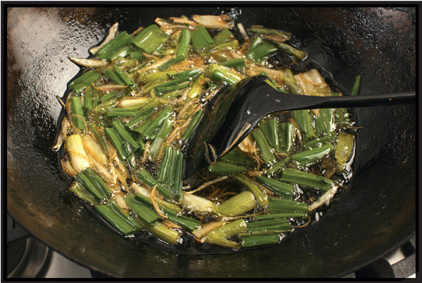
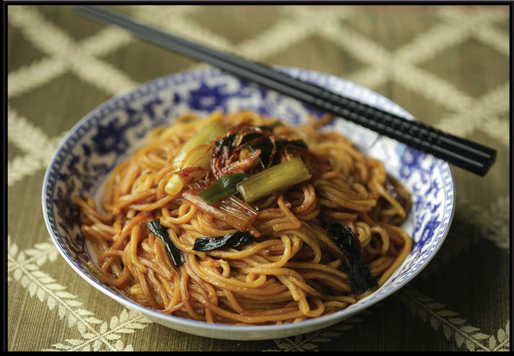

SHANGHAI-STYLE SCALLION OIL
|
Yield Makes 2½ cups Active Time 15 minutes Total Time 15 minutes |
You can use Korean or Sichuan chile flakes in place of the Thai bird chiles for a milder sauce. |
INGREDIENTS
2 cups (500 ml) peanut, rice bran, or other neutral oil
6 ounces (180 g about 8 whole) scallions, cut into 1-inch segments, white, pale green, and dark green sections reserved separately
2 medium shallots (about 3 ounces/90 g), thinly sliced (optional)
1 teaspoon (4 g) kosher salt
Scallion oil is a classic Shanghai condiment that’s used in everything from simple bowls of noodles to marinades to dipping sauces. It’s one of the easiest oils to make and extraordinarily versatile. Its flavor will meld with just about any savory dish.
Some recipes for scallion oil call for cooking the scallions until they are completely browned and crispy. I prefer stopping the cooking when the scallions are golden brown in spots, but still a little juicy and tender in others, though if you prefer the sweeter flavor and crisp texture of fully browned onions, don’t let my preferences stop you from cooking them however you like. Just make sure to taste as you go and shut off the heat a little before you think they’re done, as they’ll continue cooking in the hot oil for a few moments after the heat is off.
DIRECTIONS
1 Heat the oil, scallion whites and pale greens, and shallots (if using) in a wok over medium heat until the scallions start to bubble gently. Reduce the heat to maintain a very slow, lazy bubble. Cook, stirring frequently, until the scallions and shallots start to wrinkle and turn a little brown around the edges, about 8 minutes. The shallots should maintain a steady bubble throughout the cooking.
2 Add the scallion dark green sections and the salt and continue to cook, stirring, until the scallions and shallots are wrinkled and pale brown all over, about 4 minutes longer. Remove from the heat, allow to cool, transfer to a sealable container, and store in the refrigerator for up to 2 months.


Shanghai-Style Noodles with Scallion Oil
Cook noodles according to package directions. Rinse the noodles briefly under cold water when they are done to stop cooking. For every 2 portions of noodles, heat ¼ cup (60 ml) scallion oil (along with some of the scallion pieces), 2 tablespoons (30 ml) light soy sauce or shoyu, 1 tablespoon (15 ml) dark soy sauce, and 2 teaspoons (8 g) sugar over high heat until the sugar dissolves and the sauce is simmering. Add the noodles, toss to coat in the sauce, cook until just heated through, then transfer to a serving platter and serve (you can top them with more of the fried scallions from the jar of scallion oil if you’d like).
Other Good Uses for Scallion Oil
•Splash a few teaspoons of scallion oil into the wok toward the end of a stir-fry to give it an extra boost of aroma.
•Use it to stir-fry eggs in any of the egg dishes on here.
•Drizzle a few drops of it over any soup and allow the heat of the soup to bring out its aroma. (This is a quick and easy way to boost your favorite instant ramen.)
•Use it in place of sesame oil in meat marinades.
•Add a little drizzle to salad dressings.
•Drizzle it on top of pizza, French fries, or roasted potatoes.
•Use it in place of sesame oil to brush dough for Chinese-Style Scallion Pancakes (here) or Mandarin Pancakes (here).
•Add a splash to a dish of soy sauce and vinegar as a dip for your dumplings (or use it to flavor the dumpling filling itself).
•Use it to add flavor and fat to steamed or poached chicken or fish.
